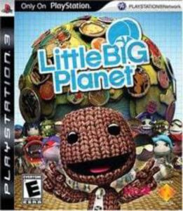

The Saddest Shutdown in Video Game History: Little Big Planet..
Author: Ez Publish date: September 10, 2025
Table of Contents
Little Big Planet was and still is one of my favorite games to play but sadly the online servers were shut down due to hackers (and sony deciding that it would be too expensive to manage the hacking problem).
I have a lot of great memories playing Little Big Planet in the back room of my old childhood home with my sisters. Little Big Planet was the one game we had that we could all play together and not argue about who's player one..
The, mass appeal of Little Big Planet for a lot of the fans was the fact that you could create anything and that you could share those levels that other people in the community could play. I remember playing many levels that left lasting memories for me and my sisters. One time, during the summer my sisters and I wanted to go to the pool but our parents were busy with work, so we decide to find a swimming pool level in the game.
The Start of an Adventure

The first installment of Little Big Planet was on the PlayStation 3 also my first ever legit game console. I've played many games on the PlayStation 3 many of them being Lego games, the first time I saw a game who's characters weren't made completely of Lego it amazed me. The first time we ever played Little Big Planet was the demo and we replayed it so much that our dad got tired of watching us play the same level over and over again. So that chrismas Our paraents got us the Full game... (and bikes).

Beyond the Demo
Now, when we finally got the full game, we would play it EVERY DAY. There isn't a single day I can remember us not playing. We played the Story mode, and the community made levels. Back to the pool level story I was telling at the beginning of the article, that day we found two levels that we. The first level was inspired by the Olympics. The Olympic level had a swimming race, a sprint, and a long jump.
The Second Level we played was just a regular pool level with a diving board. But, there is a funny story we got from this level. When my older sister was going to use the diving board for some reason the entire thing started crashing down into the pool pushing my younger sister and I under water! After that there was a scilence that fell in the room but then we all looked at eachother and started laughing!
[END.]